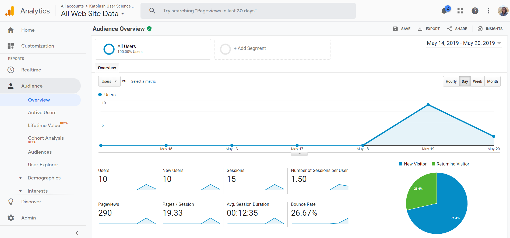
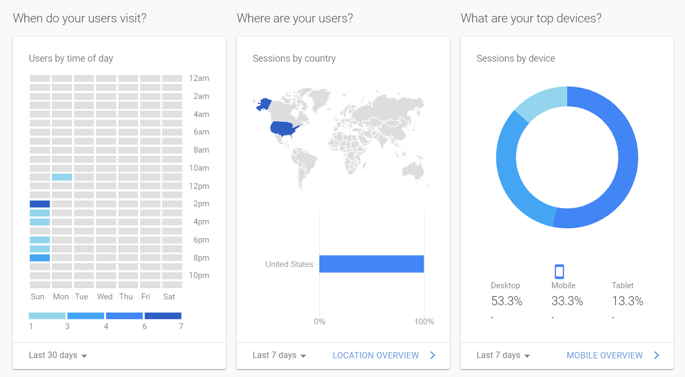
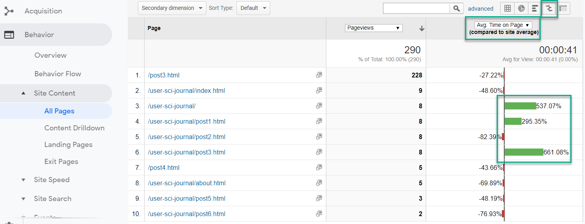
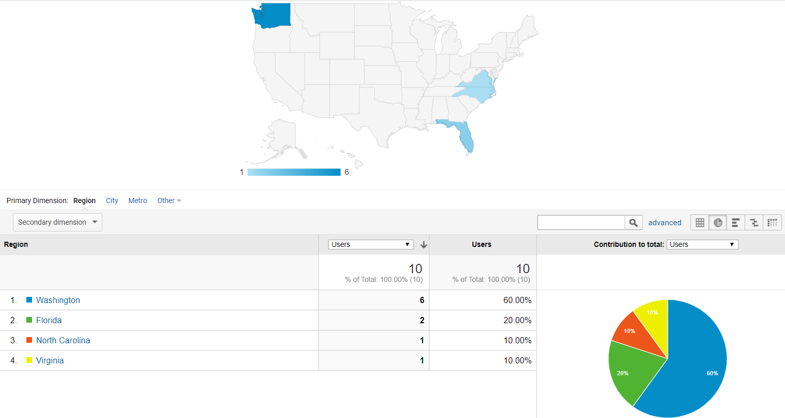
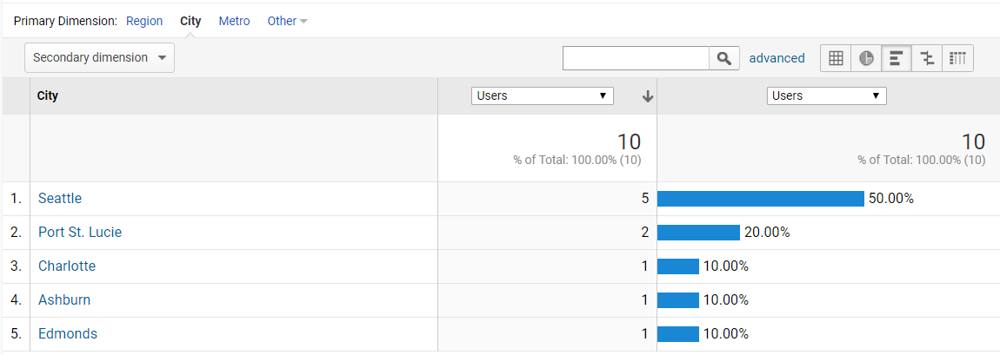
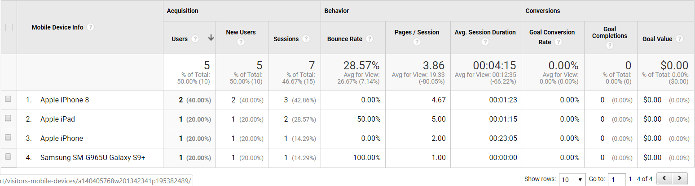

If you build it, they will come. Maybe. Figuring out your audience, where they are coming from and what they are interested in, is key to a successful website, business, campaign etc.
"The greatest value of a picture is when it forces us to notice what we never expected to see." – John W. Tukey
I finally set up Google Analytics tracking on my User Science Journal the other day. This was a much over due task,since I could have had more than 1-2 days of data to share with you today. But considering my blog isn't currently linked anywhere and I don't expect it to receive much traffic in the new user realm, the results would most likely have been very similar to what I will be reviewing and showing you in the charts and graphs below.
As stated earlier, I used Google Analytics to get me going with some data I can use to determine who is visiting my page, what they are spending time viewing or not viewing, what they are using to browse my page and from where, along with a plethora of other data that could be useful as I continue building out my blog and brand/profile.
The Data
 Google Analytics Audience OverviewWhen we build a site/business, we typically have an idea of who our viewers/customers will be, what they will be using to view your site and where they might have found you.
In the case of my User Science Journal, here are my initial assumptions:
- My site will be most popular with women between the ages of 25-55, from the US.
- For the time being, my users will come from direct links I send out or Social Media, like my facebook page or Instagram. I don't have the site linked to either of these pages at this time so for now it will be mostly direct access.
- The most popular search terms that would lead people to my site would be "usability" "testing" "accessibility".
Lets take a look at some of the functionality that Google Analytics provides for us for free! Even with my limited 2 day feed of data, the Google Analytics tool provides a rich dashboard of customizable charts. Below is an example of just a few of the charts found on the dashboard, showing what time of the day my users are visiting, where their geographic location is and what type of device they are using.
 Google Analytics DashboardThe image below, displays a chart that shows the Avg time spent on a page under the Behavior report category. The chart lists out all of the pages on my site that have the Google Analytics code tracking and the avg time spent by visitors on those pages. The time of this writing, visitors were spending an avg of 41 seconds per page on my site with Post 3 being the most popular based on time spent.
 Google Analytics Avg Time on Page ChartHands down one of the coolest features of Google Analytics is it's visitor geographic data. The Geo charts will narrow down where your visitors are geographically by region, country
 Google Analytics Visitors by Location...and even city!
 Google Analytics Visitors by CityAnother useful report for developers specifically, is the Devices report. This will show what types of devices your visitors are using when browsing your page. In my case, it seems that a good portion of visitors used mobile phones when checking out my blog. Lots of Apple products, including an iPad as well as a Samsung. Having this type of detail allows a developer to more accurately analyze how the build of the page displays on the devices used.
 Google Analytics Visitors by DeviceAdditionally, the Technology report allows us to view what browsers and networks our visitors are using, which can also be very useful for developing and ensuring we are testing the browsers our visitors are preferring to use.
The Demographics report provides additional valuable data like gender and age but unfortunately setting up that tracking takes a couple extra days so I wasn't able to capture that for this report.
Summary
In a nutshell, Google's site analysis is pretty amazing. Gathering the data the tool provides and learning to understand it, provides valuable insight on the effectiveness of your efforts. Though it's not error free, and can lead to some misguided assumptions, in general the tool is a great guide for deciding what type of content your users are interacting with most, who they are, where advertising or linking your page is most beneficial and so much more.
It's truly amazing how much information we have at our fingertips to help us succeed in almost any undertaking. Not taking the time to explore this type of detail could be quite a blunder. I'm excited to see how this data will develope overtime, with the growth of the content and visitors.